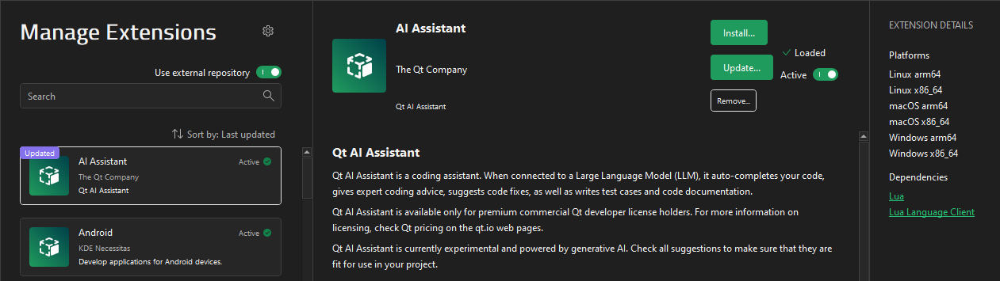

Manage extensions
In the Extensions mode, you can install extensions from the Qt Creator extension registry or from other external repositories, as well as activate and deactivate them.

When you install extensions, they are copied to the correct place on the computer and activated for use. Qt Creator can also load extensions as dependencies of other extensions without explicitly activating them.
To find extensions, start typing in Search.
You can sort extensions according to their name or update date.
To add URLs for installing extensions from external registries or to install extensions from installation packages, select  .
.
See also Install extensions and Activate extensions.